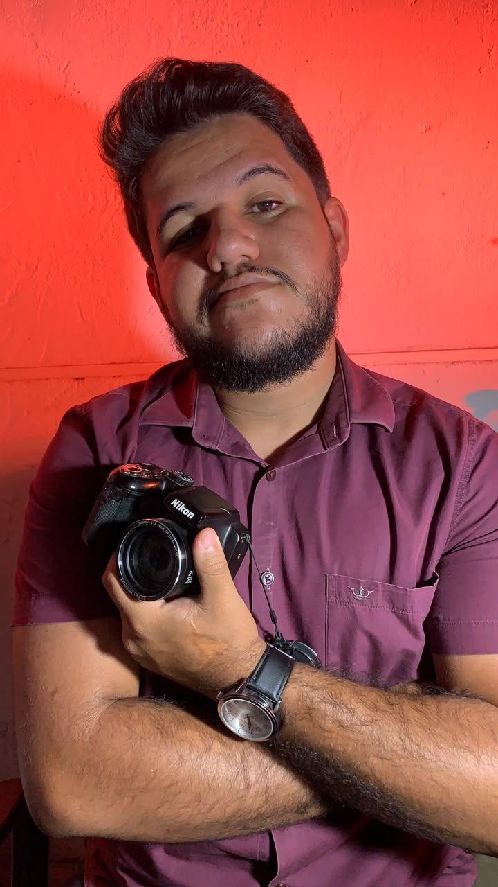
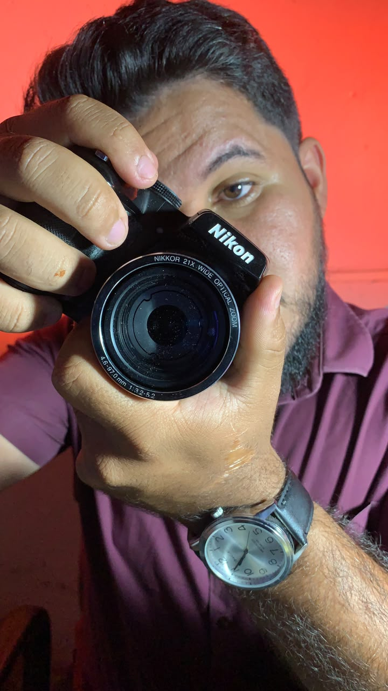

O que eu penso
fica melhor quando
ganha forma.
Aqui não existe apenas “trabalho bonito”. Existe processo, teste, produto, comunicação e uma tentativa constante de transformar criatividade em ativo.

Por trás da criação
Imagem, câmera e storytelling como ferramentas de atenção e expressão.

Presença que tem rosto
Uma marca pessoal construída em torno de personalidade, criatividade e vida real.
CUCCA
Uma experiência de receitas a partir do que existe na sua cozinha.
Ecclesia
Uma visão de plataforma para conectar pessoas e iniciativas cristãs.
Laboratório
aberto.
Alguns nomes são projetos, outros são hipóteses e outros são ideias em construção. O valor está também no raciocínio por trás deles.
Produto digital + IA
Uma proposta simples: diga o que você tem e descubra o que pode fazer. Menos desperdício, mais praticidade.
Comunidade + plataforma
Uma visão de produto para conectar pessoas, igrejas, eventos e oportunidades de serviço.
Marca pessoal como ecossistema
Conteúdo, autoridade, criatividade, negócios e personalidade em uma mesma narrativa.
Olhar, câmera e narrativa
Produção de imagem como extensão da estratégia: atenção primeiro, mensagem depois.